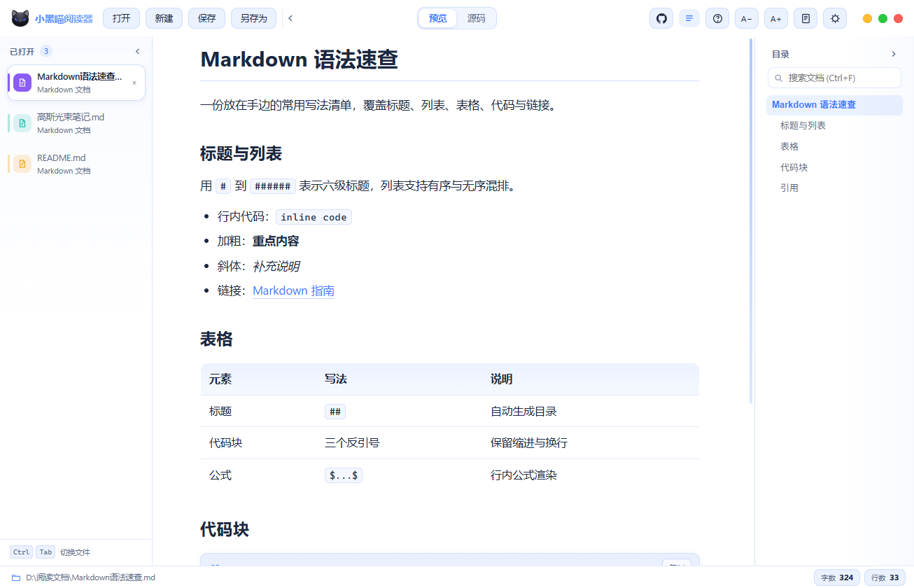
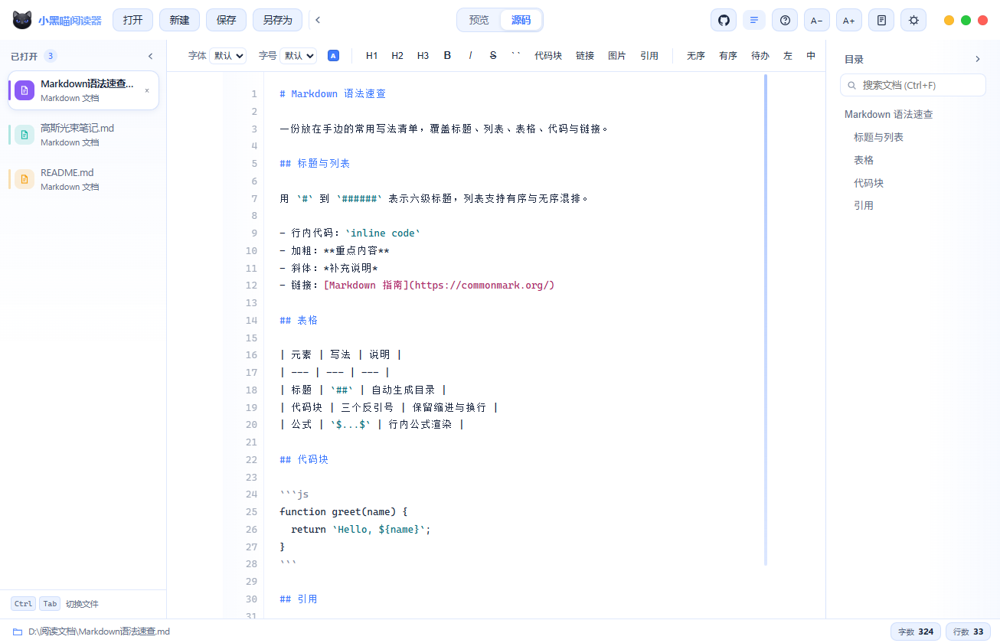
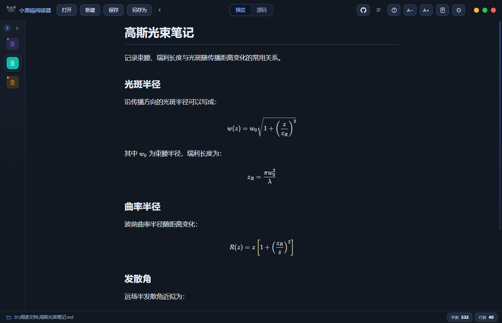

多标签并读
同时打开多份文档，每个文件有独立色标；未保存状态清楚可见，切换不打断思路。
把 Markdown 读成一本安静的书。
单文件、轻量的 Windows 阅读器。多标签、右侧目录、LaTeX 公式与源码模式收在同一个窗口里，拖入文档即可开始阅读。

FEATURES
只保留阅读真正需要的功能，把打开文件到读完这一条路径做顺。
同时打开多份文档，每个文件有独立色标；未保存状态清楚可见，切换不打断思路。
标题自动汇总成目录，点击即可定位到正文对应段落；面板可收起，把宽度让给内容。
行内与行间公式都能稳定排版，公式字体随应用本地加载，阅读时不需要联网。
预览看结果，源码改细节。行号、语法高亮、缩进与常用格式工具都在编辑区里。
浅色或深色，字号大小，A4、Letter、窄栏与宽屏，按当下的阅读场景调整。
约 3 MB 的单文件应用，打开即用；文档只在本机打开，不上传云端。
INTERFACE
左侧文件栏可以收起成图标，右侧目录随时让位；源码与预览一键切换。


DOWNLOAD
下载、双击。阅读设置与窗口布局会自动保留；文档本身只在你点击保存时写入。
首次启动会创建本地配置目录。更新时直接用新文件覆盖旧文件即可。
628b50abd132548ec84d28c01b9d55877bf1e27198a8f29ba1b1aa0538523b18FAQ
支持 .md、.markdown、.mdown、.mkd 与 .txt。拖入窗口或通过“打开”选择文件都可以。
预览是只读的。只有在源码模式里主动保存或另存为时，才会写入文件。
不需要。公式字体随应用本地加载，断网也能正常显示。
下载新版本，覆盖旧的 exe 文件即可。阅读设置与窗口布局会保留。